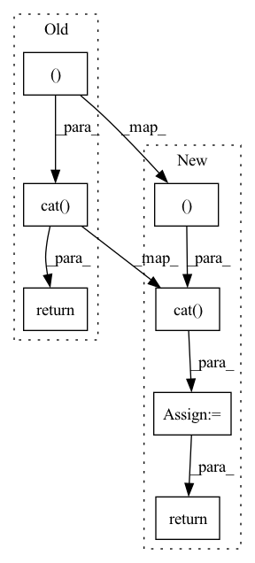

Pattern ID :2477

Before Change
def forward(self, x):
y1 = self.cv3(self.m(self.cv1(x)))
y2 = self.cv2(x)
return self.cv4(self.act(self.bn(torch.cat((y1, y2), dim=1))))
class C3(nn.Module):
After Change
def forward(self, x):
y1 = self.cv3(self.m(self.cv1(x)))
y2 = self.cv2(x)
y = torch.cat((y1, y2), dim=1)
y = forward_norm_layer(y, self.bn, self.norm_type)
y = self.act(y)
return self.cv4(y)
class C3(nn.Module):
In pattern: SUPERPATTERN
Frequency: 3
Non-data size: 7
Instances
Fragment ID: 14720113
Project Name: liudakai2/unsupdis-pytorch
Commit Name: dff9ffa2c563414ada8234e40e7de2b12f556638
Time: 2022-07-21
Author: 951522847@qq.com
File Name: models/common.py
M Class Name: BottleneckCSP
N Class Name: BottleneckCSP
M Method Name: forward(2)
N Method Name: forward(2)
M Parent Class: nn.Module
N Parent Class: nn.Module
M File Name: models/common.py
N File Name: models/common.py
M Start Line: 278
M End Line: 278
N Start Line: 287
N End Line: 290
'>
Before Change
A = A.view(N, 1, ord_num * H * W)
B = B.view(N, 1, ord_num * H * W)
concat_feats = torch.cat((A, B), dim=1).contiguous()
if self.training:
ord_prob = F.log_softmax(concat_feats, dim=1)
return ord_prob.view(-1, ord_num, H, W)
ord_prob = F.softmax(C, dim=1)[:, 1, ::]
ord_prob = ord_prob.view(-1, ord_num, H, W)
After Change
// B = B.reshape(N, 1, ord_num * H * W)
A = A.unsqueeze(dim=1)
B = B.unsqueeze(dim=1)
concat_feats = torch.cat((A, B), dim=1)
if self.training:
prob = F.log_softmax(concat_feats, dim=1)
ord_prob = x.clone()
ord_prob[:, 0::2, :, :] = prob[:, 0, :, :, :]
ord_prob[:, 1::2, :, :] = prob[:, 1, :, :, :]
return ord_prob
ord_prob = F.softmax(concat_feats, dim=1)[:, 0, ::]
ord_label = torch.sum((ord_prob > 0.5), dim=1).reshape((N, 1, H, W))
'>
Fragment ID: 14720115
Project Name: dontlovebugs/superviseddepthprediction
Commit Name: 07fe1714fc568b25bd80debe8dd3ab800ff576a8
Time: 2020-05-02
Author: wangxin_buaa@163.com
File Name: dp/modules/decoders/OrdinalRegression.py
M Class Name: OrdinalRegressionLayer
N Class Name: OrdinalRegressionLayer
M Method Name: forward(2)
N Method Name: forward(2)
M Parent Class: nn.Module
N Parent Class: nn.Module
M File Name: dp/modules/decoders/OrdinalRegression.py
N File Name: dp/modules/decoders/OrdinalRegression.py
M Start Line: 26
M End Line: 41
N Start Line: 28
N End Line: 45
'>
Before Change
is_pad = (x == self.pad_idx).unsqueeze(-2)
shifted = torch.zeros(x.size()[:-1] + (1, offset,),
dtype=torch.bool, device=x.device)
return torch.cat((shifted, is_pad), dim=-1)
class FutureMasking(nn.Module):
After Change
is_pad = (x == self.pad_idx).unsqueeze(-2)
shifted = torch.zeros(x.size()[:-1] + (1, offset,),
dtype=torch.bool, device=x.device)
mask = torch.cat((shifted, is_pad), dim=-1)
// Expand the tensor.
return mask.expand(x.shape + mask.shape[-1:])
class FutureMasking(nn.Module):
'>
Fragment ID: 14720119
Project Name: affjljoo3581/gpt2
Commit Name: 2d7f2c40e7cece98300a3766a7ced0ef09b85804
Time: 2020-06-24
Author: affjljoo3581@gmail.com
File Name: src/gpt2/modeling/masking.py
M Class Name: PadMasking
N Class Name: PadMasking
M Method Name: forward(3)
N Method Name: forward(3)
M Parent Class: nn.Module
N Parent Class: nn.Module
M File Name: src/gpt2/modeling/masking.py
N File Name: src/gpt2/modeling/masking.py
M Start Line: 22
M End Line: 22
N Start Line: 22
N End Line: 25